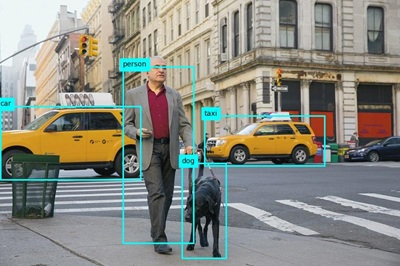
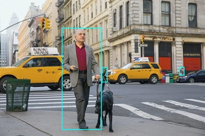

Microsoft has implemented increased security requirements on Microsoft accounts to require Multifactor Authentication (MFA). To prevent the need for you to utilize an Authenticator application, Skillable has implemented an update to our Cloud Slice solution in this lab and it now uses a Temporary Access Pass (TAP) token.
This TAP token is a replacement to the password and prevents the need to authenticate via MFA. The password has been replaced with the provided TAP token in this lab's instructions and both the password and TAP token can be found in your Resources tab at any time.
Important information
Read this before you start
In this hosted lab environment, there are some restrictions on the resource names, credentials, and other values you can use. In this exercise, you must use the following values:
Windows credentials:
Use these credentials to sign into Windows:
- User name: Admin
- Password: Pa55w.rd
Azure credentials
Use these credentials to sign into Azure:
- Email address: User1-57057083@LODSPRODMSLEARNMCA.onmicrosoft.com
- Temporary Access Pass (TAP): CjGheCg3
Azure resources
Use these names when creating resources in Azure
- Resource group: ResourceGroup1
- Computer Vision: vision57057083
For all other resources, use the default name.
Tip: As you follow the instructions in this pane, whenever you see a icon, you can use it to copy text from the instruction pane into the virtual machine interface (other than to a cloud shell command line). This is particularly useful to copy code; but bear in mind you may need to modify the pasted code to fix indent levels or formatting before running it!
If you have to copy multiple lines within a code block into an application or cloud shell prompt, consider using Notepad as an intermediate step by doing the following:
- Open Notepad.
- Select the symbol beside the code block to copy the code block into Notepad.
- Select the lines of code you copied into Notepad and paste them into the application or cloud shell prompt.
Now, when you're ready, go to the next page to start the exercise.
If you have to copy multiple lines within a code block into an application or cloud shell prompt, consider using Notepad as an intermediate step by doing the following:
- Open Notepad.
- Select the symbol beside the code block to copy the code block into Notepad.
- Select the lines of code you copied into Notepad and paste them into the application or cloud shell prompt.
Analyze images
Azure AI Vision is an artificial intelligence capability that enables software systems to interpret visual input by analyzing images. In Microsoft Azure, the Vision Azure AI service provides pre-built models for common computer vision tasks, including analysis of images to suggest captions and tags, detection of common objects and people. You can also use the Azure AI Vision service to remove the background or create a foreground matting of images.
Note: This exercise is based on pre-release SDK software, which may be subject to change. Where necessary, we've used specific versions of packages; which may not reflect the latest available versions. You may experience some unexpected behavior, warnings, or errors.
While this exercise is based on the Azure Vision Python SDK, you can develop vision applications using multiple language-specific SDKs; including:
- Azure AI Vision Analysis for JavaScript
- Azure AI Vision Analysis for Microsoft .NET
- Azure AI Vision Analysis for Java
This exercise takes approximately 30 minutes.
Provision an Azure AI Vision resource
If you don't already have one in your subscription, you'll need to provision an Azure AI Vision resource.
Note: In this exercise, you'll use a standalone Computer Vision resource. You can also use Azure AI Vision services in an Azure AI Services multi-service resource, either directly or in an Azure AI Foundry project.
Open the Azure portal at
https://portal.azure.com, and sign in using the username User1-57057083@LODSPRODMSLEARNMCA.onmicrosoft.com and the TAP CjGheCg3. Close any welcome messages or tips that are displayed.Select Create a resource.
In the search bar, search for
Computer Vision, select Computer Vision, and create the resource with the following settings:- Subscription: Your Azure subscription
- Resource group: ResourceGroup1
- Region: southeastasia
- Name: vision57057083
- Pricing tier: Free F0
*Azure AI Vision 4.0 full feature sets are currently only available in these regions.
Select the required checkboxes and create the resource.
Wait for deployment to complete, and then view the deployment details.
When the resource has been deployed, go to it and under the Resource management node in the navigation pane, view its Keys and Endpoint page. You will need the endpoint and one of the keys from this page in the next procedure.
Develop an image analysis app with the Azure AI Vision SDK
In this exercise, you'll complete a partially implemented client application that uses the Azure AI Vision SDK to analyze images.
Prepare the application configuration
In the Azure portal, use the [>_] button to the right of the search bar at the top of the page to create a new Cloud Shell in the Azure portal, selecting a PowerShell environment with no storage in your subscription.
The cloud shell provides a command-line interface in a pane at the bottom of the Azure portal.
Note: If you have previously created a cloud shell that uses a Bash environment, switch it to PowerShell.
Note: If the portal asks you to select a storage to persist your files, choose No storage account required, select the subscription you are using and press Apply.
In the cloud shell toolbar, in the Settings menu, select Go to Classic version (this is required to use the code editor).
Ensure you've switched to the classic version of the cloud shell before continuing.
Resize the cloud shell pane so you can still see the Keys and Endpoint page for your Computer Vision resource.
Tip" You can resize the pane by dragging the top border. You can also use the minimize and maximize buttons to switch between the cloud shell and the main portal interface.
In the cloud shell pane, enter the following commands to clone the GitHub repo containing the code files for this exercise (type the command, or copy it to the clipboard and then right-click in the command line and paste as plain text):
TypeCopyrm -r mslearn-ai-vision -f git clone https://github.com/MicrosoftLearning/mslearn-ai-visionTip: As you paste commands into the cloudshell, the output may take up a large amount of the screen buffer. You can clear the screen by entering the
clscommand to make it easier to focus on each task.After the repo has been cloned, use the following command to navigate to and view the folder containing the application code files:
TypeCopycd mslearn-ai-vision/Labfiles/analyze-images/python/image-analysis ls -a -lThe folder contains application configuration and code files for your app. It also contains a /images subfolder, which contains some image files for your app to analyze.
Install the Azure AI Vision SDK package and other required packages by running the following commands:
TypeCopypython -m venv labenv ./labenv/bin/Activate.ps1 pip install -r requirements.txt azure-ai-vision-imageanalysis==1.0.0Enter the following command to edit the configuration file for your app:
TypeCopycode .envThe file is opened in a code editor.
In the code file, update the configuration values it contains to reflect the endpoint and an authentication key for your Computer Vision resource (copied from its Keys and Endpoint page in the Azure portal).
After you've replaced the placeholders, use the CTRL+S command to save your changes and then use the CTRL+Q command to close the code editor while keeping the cloud shell command line open.
Add code to suggest a caption
In the cloud shell command line, enter the following command to open the code file for the client application:
TypeCopycode image-analysis.pyTip: You might want to maximize the cloud shell pane and move the split-bar between the command line cosole and the code editor so you can see the code more easily.
In the code file, find the comment Import namespaces, and add the following code to import the namespaces you will need to use the Azure AI Vision SDK:
pythonTypeCopy# import namespaces from azure.ai.vision.imageanalysis import ImageAnalysisClient from azure.ai.vision.imageanalysis.models import VisualFeatures from azure.core.credentials import AzureKeyCredentialIn the Main function, note that the code to load the configuration settings and determine the image file to be analyzed has been provided. Then find the comment Authenticate Azure AI Vision client and add the following code to create and authenticate a Azure AI Vision client object (be sure to maintain the correct indentation levels):
pythonTypeCopy# Authenticate Azure AI Vision client cv_client = ImageAnalysisClient( endpoint=ai_endpoint, credential=AzureKeyCredential(ai_key))In the Main function, under the code you just added, find the comment Analyze image and add the following code:
pythonTypeCopy# Analyze image with open(image_file, "rb") as f: image_data = f.read() print(f'\nAnalyzing {image_file}\n') result = cv_client.analyze( image_data=image_data, visual_features=[ VisualFeatures.CAPTION, VisualFeatures.DENSE_CAPTIONS, VisualFeatures.TAGS, VisualFeatures.OBJECTS, VisualFeatures.PEOPLE], )Find the comment Get image captions, add the following code to display image captions and dense captions:
pythonTypeCopy# Get image captions if result.caption is not None: print("\nCaption:") print(" Caption: '{}' (confidence: {:.2f}%)".format(result.caption.text, result.caption.confidence * 100)) if result.dense_captions is not None: print("\nDense Captions:") for caption in result.dense_captions.list: print(" Caption: '{}' (confidence: {:.2f}%)".format(caption.text, caption.confidence * 100))Save your changes (CTRL+S) and resize the panes so you can clearly see the command line console while keeping the code editor open. Then enter the following command to run the program with the argument images/street.jpg:
TypeCopypython image-analysis.py images/street.jpgObserve the output, which should include a suggested caption for the street.jpg image, which looks like this:
Run the program again, this time with the argument images/building.jpg to see the caption that gets generated for the building.jpg image, which looks like this:
Repeat the previous step to generate a caption for the images/person.jpg file, which looks like this:
Add code to generate suggested tags
It can sometimes be useful to identify relevant tags that provide clues about the contents of an image.
In the code editor, in the AnalyzeImage function, find the comment Get image tags and add the following code:
pythonTypeCopy# Get image tags if result.tags is not None: print("\nTags:") for tag in result.tags.list: print(" Tag: '{}' (confidence: {:.2f}%)".format(tag.name, tag.confidence * 100))Save your changes (CTRL+S) and run the program with the argument images/street.jpg, observing that in addition to the image caption, a list of suggested tags is displayed.
Rerun the program for the images/building.jpg and images/person.jpg files.
Add code to detect and locate objects
In the code editor, in the AnalyzeImage function, find the comment Get objects in the image and add the following code to list the objects detected in the image, and call the provided function to annotate an image with the detected objects:
pythonTypeCopy# Get objects in the image if result.objects is not None: print("\nObjects in image:") for detected_object in result.objects.list: # Print object tag and confidence print(" {} (confidence: {:.2f}%)".format(detected_object.tags[0].name, detected_object.tags[0].confidence * 100)) # Annotate objects in the image show_objects(image_file, result.objects.list)Save your changes (CTRL+S) and run the program with the argument images/street.jpg, observing that in addition to the image caption and suggested tags; a file named objects.jpg is generated.
Use the (Azure cloud shell-specific) download command to download the objects.jpg file:
TypeCopydownload objects.jpgThe download command creates a popup link at the bottom right of your browser, which you can select to download and open the file. The image should look similar to this:

Rerun the program for the images/building.jpg and images/person.jpg files, downloading the generated objects.jpg file after each run.
Add code to detect and locate people
In the code editor, in the AnalyzeImage function, find the comment Get people in the image and add the following code to list any detected people with a confidence level of 20% or more, and call a provided function to annotate them in an image:
PythonTypeCopy# Get people in the image if result.people is not None: print("\nPeople in image:") for detected_person in result.people.list: if detected_person.confidence > 0.2: # Print location and confidence of each person detected print(" {} (confidence: {:.2f}%)".format(detected_person.bounding_box, detected_person.confidence * 100)) # Annotate people in the image show_people(image_file, result.people.list)Save your changes (CTRL+S) and run the program with the argument images/street.jpg, observing that in addition to the image caption, suggested tags, and objects.jpg file; a list of person locations and file named people.jpg is generated.
Use the (Azure cloud shell-specific) download command to download the objects.jpg file:
TypeCopydownload people.jpgThe download command creates a popup link at the bottom right of your browser, which you can select to download and open the file. The image should look similar to this:

Rerun the program for the images/building.jpg and images/person.jpg files, downloading the generated people.jpg file after each run.
Tip: If you see bounding boxes returned from the model that don't make sense, check the JSON confidence score and try increasing the confidence score filtering in your app.
Clean up resources
If you've finished exploring Azure AI Vision, you should delete the resources you have created in this exercise to avoid incurring unnecessary Azure costs:
Open the Azure portal at
https://portal.azure.com, and sign in using the Microsoft account associated with your Azure subscription.In the top search bar, search for Computer Vision, and select the Computer Vision resource you created in this lab.
On the resource page, select Delete and follow the instructions to delete the resource.
End the lab
Please be sure to end the lab.
Azure Portal
| URL | https://portal.azure.com/#home |
| Subscription | 5509f7a8-f31b-4168-8ccb-3bec14641003 |
| Username | User1-57057083@LODSPRODMSLEARNMCA.onmicrosoft.com |
| Password | Mj9Hd7$!Bk3n |
| TAP | CjGheCg3 |
Resource GroupResourceGroup1
Support Information
| ID | 57057083 |
| Host | SGP-HV21 |
| Datacenter | Southeast Asia |